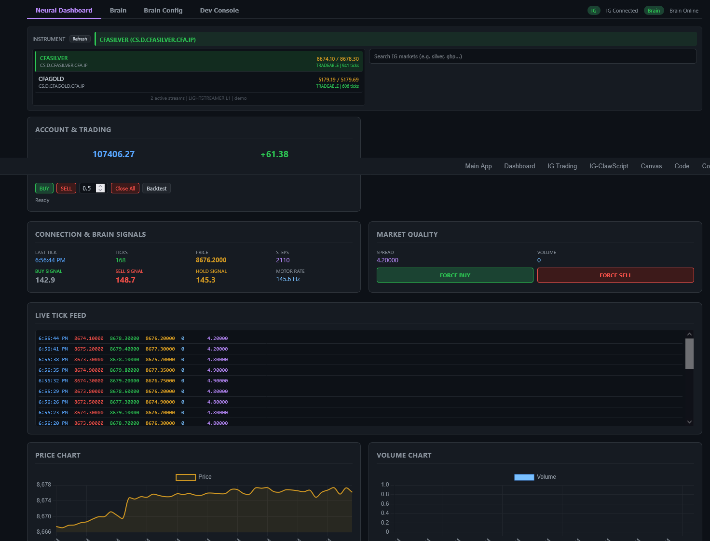
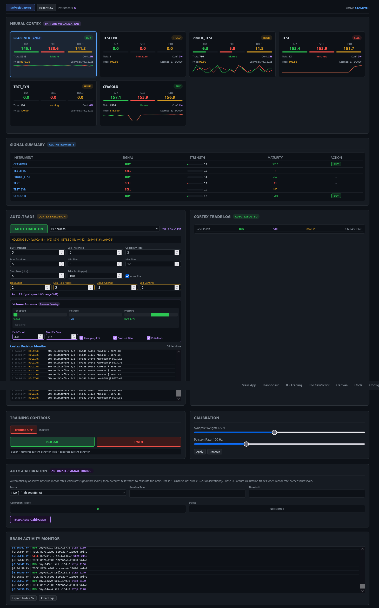
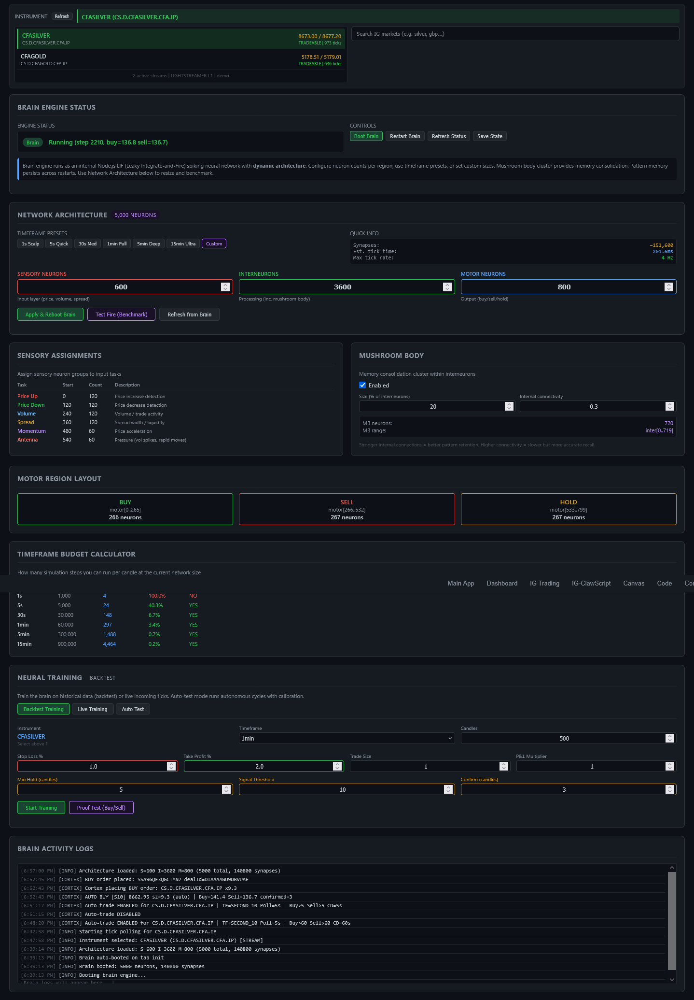
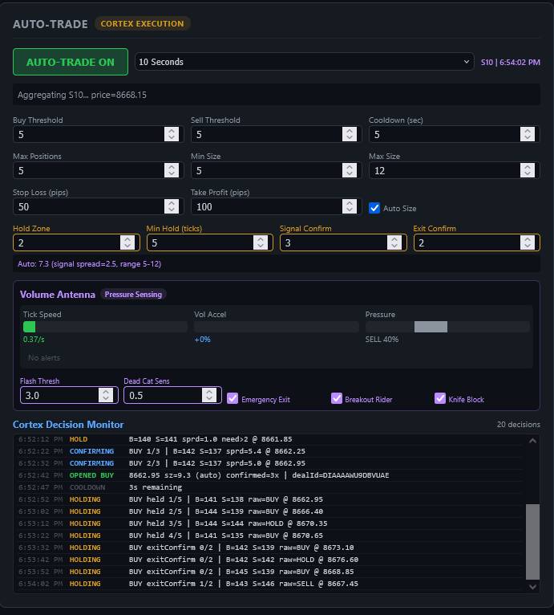

BrainJar integration for the IG Trading Dashboard — a biologically-inspired spiking neural network for autonomous market analysis and trading.
Neural Trading uses a Leaky Integrate-and-Fire (LIF) spiking neural network inspired by the Drosophila (fruit fly) connectome. Unlike traditional neural networks that use backpropagation, this brain works through biological spiking dynamics:
The brain engine runs as an internal Node.js server (skills/bots/brain-engine-server.cjs), auto-spawned by the bot manager, communicating via /api/brain/* proxy routes.
The Neural Trading interface has four sub-tabs accessible from the IG Dashboard:
The main overview — instrument selector, live tick feed, connection status, price/volume charts, and manual trade triggers (Force Buy/Sell).

The cortex auto-trade view — per-instrument pattern cards with maturity tracking, signal summary table, auto-trade execution panel with cortex controls, trade log, training controls, and auto-calibration.

Full network configuration — dynamic architecture with configurable neuron counts, timeframe presets, sensory assignments, mushroom body settings, motor region layout, timeframe budget calculator, and neural backtest training.

Real-time brain activity logs for debugging and monitoring brain engine internals.
The network consists of three layers of neurons with configurable sizes:
| Layer | Role | Default (1s) | Configurable |
|---|---|---|---|
| Sensory | Input — receives market data stimuli | 600 neurons | Yes |
| Interneurons | Processing — pattern recognition core | 3600 neurons | Yes |
| Motor | Output — buy/sell/hold decisions | 800 neurons | Yes |
| Group | Default % | Purpose |
|---|---|---|
| Price Up | 20% | Fires stronger when price increases |
| Price Down | 20% | Fires stronger when price decreases |
| Volume | 20% | Encodes trade volume intensity |
| Spread | 20% | Encodes bid-ask spread width (liquidity) |
| Momentum | 10% | Fires on price acceleration / rapid moves |
| Antenna | 10% | Pressure sensing — flash crashes, volume spikes, rapid directional moves |
Motor neurons are split into three equal populations. The population with the highest average firing rate over the last 10 steps determines the brain's output signal:
| Preset | Neurons | Synapses | Use Case |
|---|---|---|---|
| 1s Scalp | 350 | ~5,000 | Ultra-fast scalping |
| 5s Quick | 700 | ~15,000 | Quick scalping |
| 30s Med | 1,500 | ~45,000 | Medium-speed trading |
| 1min Full | 5,000 | ~148,000 | Standard operation |
| 5min Deep | 10,000 | ~400,000 | Deep analysis |
| 15min Ultra | 20,000 | ~1,200,000 | Maximum pattern depth |
The brain supports multiple training approaches, all integrated with the Volume Antenna system:
Feed historical candles through the brain. Automatic sugar/pain feedback based on P&L outcomes. Configurable stop-loss, take-profit, min hold candles, signal threshold, and confirmation candles.
Train on live market data candle-by-candle. The frontend computes real antenna pressure from the tick accumulator and sends it with each candle. Brain returns signals with antenna alerts.
Multi-cycle autonomous backtest training with calibration. Runs multiple passes over historical data, adjusting parameters between cycles for optimal performance.
Quick validation — stimulates the brain with a small dataset and reports buy/sell accuracy without modifying weights.
| Parameter | Default | Description |
|---|---|---|
| Min Hold (candles) | 5 | Minimum candles to hold a position before evaluating exit |
| Signal Threshold | 10 | Motor rate difference required to generate a buy/sell signal |
| Confirm (candles) | 3 | Consecutive same-direction candles before entering a trade |
| Stop Loss % | 1.0 | Maximum loss before forced exit |
| Take Profit % | 2.0 | Target profit for position exit |
| P&L Multiplier | 1 | Scales sugar/pain feedback intensity |
The Volume Antenna is a market pressure sensing system with 180 antenna neurons organized into 7 sub-groups. It detects anomalous market conditions and feeds pressure data into the brain's spiking network.

| Sub-Group | Neurons | What it Detects |
|---|---|---|
| Tick Velocity | 26 | Speed of incoming price ticks |
| Volume Acceleration | 26 | Rate of change in volume |
| Buy/Sell Pressure | 26 | Directional bias from order flow |
| Absorption | 26 | Large orders absorbing opposing flow |
| Flash Crash | 26 | Sudden price drops with volume spikes |
| Dead Cat Bounce | 26 | Temporary recovery after sharp decline |
| Divergence | 24 | Price/volume divergence patterns |
{
tickVelocity, // ticks per second
volumeAccel, // volume acceleration %
buySellRatio, // 0=all sell, 1=all buy
absorptionScore, // 0-1 absorption detection
flashCrashScore, // 0-5+ flash crash severity
deadCatScore, // 0-1 dead cat bounce probability
fallingKnifeScore, // 0-1 falling knife detection
divergenceScore, // 0-1 price/volume divergence
priceVelocity, // price change rate
priceDelta // raw price delta
}The Cortex is the autonomous trading execution layer that reads brain signals and manages positions on the IG platform.
| Parameter | Default | Description |
|---|---|---|
| Hold Zone | 2 | Signal spread threshold — signals within this range are treated as HOLD |
| Min Hold (ticks) | 5 | Minimum ticks to hold a position before considering exit |
| Signal Confirm | 3 | Consecutive ticks with same signal before entering a trade |
| Exit Confirm | 2 | Consecutive opposing ticks before closing a position |
| Buy/Sell Threshold | 5 | Minimum motor rate to trigger a signal |
| Stop Loss (pips) | 50 | Maximum loss per trade |
| Take Profit (pips) | 100 | Target profit per trade |
The Mushroom Body is a densely-connected sub-cluster within the interneuron layer, inspired by the insect brain structure responsible for associative learning and memory consolidation.
~/.openclaw/brain-state.jsonThe key constraint is timeframe budget — each candle timeframe gives you a processing window. Larger networks provide deeper pattern recognition but require more time per step.
Use the Timeframe Budget Calculator in the Brain Config tab to see exactly how many simulation steps you can run per candle at your current network size. The calculator shows feasibility for each timeframe.
The synaptic weight w_syn must be 12.0 for motor neurons to spike. This is the default and should not be changed unless you understand the LIF dynamics.
All brain endpoints are proxied through /api/brain/* on the CEO proxy (port 5000). The brain engine port is stored in ~/.openclaw/brain-engine-port.
| Endpoint | Method | Description |
|---|---|---|
/api/brain/status | GET | Brain engine status, architecture info |
/api/brain/stimulate-price | POST | Feed a price tick with optional pressure data |
/api/brain/backtest-train | POST | Backtest training with historical candles |
/api/brain/live-train | POST | Live training with single candle + pressure |
/api/brain/configure | POST | Update network architecture (neuron counts) |
/api/brain/test-fire | POST | Benchmark — measure processing time per step |
/api/brain/sugar | POST | Positive reward feedback |
/api/brain/pain | POST | Negative punishment feedback |
/api/brain/save-state | POST | Save brain state to disk |
/api/brain/load-state | POST | Load brain state from disk |
/api/brain/reset | POST | Reset brain (clear all weights) |
/api/brain/cortex-status | GET | Cortex pattern memory for all instruments |
POST /api/brain/stimulate-price
{
"epic": "CS.D.CFASILVER.CFA.IP",
"price": 5185.0,
"prevPrice": 5180.0,
"volume": 800,
"spread": 4.2,
"pressure": {
"tickVelocity": 2.5,
"volumeAccel": 0.8,
"buySellRatio": 0.65,
"absorptionScore": 0.5,
"flashCrashScore": 0.3,
"deadCatScore": 0,
"fallingKnifeScore": 0,
"divergenceScore": 0
}
}POST /api/brain/backtest-train
{
"epic": "CS.D.CFASILVER.CFA.IP",
"candles": [...],
"stopLossPct": 1.0,
"takeProfitPct": 2.0,
"minHoldCandles": 5,
"signalThreshold": 10,
"confirmCandles": 3,
"antennaEnabled": true
}Pattern memory and brain weights persist at ~/.openclaw/brain-state.json. This file is loaded on boot and saved on demand or automatically after training sessions.
| Category | Parameter | Value |
|---|---|---|
| Network | Default neurons | 5,000 (S:600 I:3600 M:800) |
| Network | w_syn | 12.0 |
| Network | Poisson rate | 150 Hz |
| Cortex | Hold Zone | 2 |
| Cortex | Min Hold | 5 ticks |
| Cortex | Signal Confirm | 3 |
| Cortex | Exit Confirm | 2 |
| Antenna | Flash Threshold | 3.0 |
| Antenna | Dead Cat Sensitivity | 0.5 |
| Training | Min Hold Candles | 5 |
| Training | Signal Threshold | 10 |
| Training | Confirm Candles | 3 |
OpenClaw Mechanicus — Neural Trading Documentation. Generated 2026-03-12.